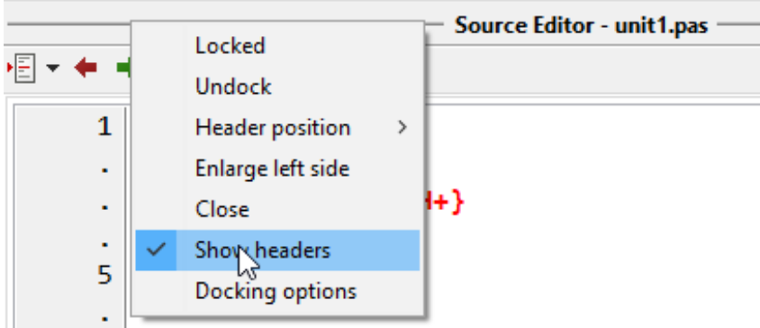

Note o nome dos cabeçalhos:
Esses títulos são chamados de “cabeçalhos”. Elas ocupam alguns pixels de altura que podem ser economizados por ocultá-los, em especial se você não pretende mais mudar as coisas de lugar e/ou sabe exatamente o que elas identificam pelo conteúdo da dock. Se deseja fazer essa economia em pixels, clique com o botão direito sobre estes cabeçalhos e desative a opção “Show headers”(Exibir cabeçalho):

Pessoalmente, deixo os cabeçalhos ligados porque gosto do botão de “Minimizar”, ele me é útil. Ao ocultar os cabeçalhos perco o botão de minimizar e não posso mais empilhar docas sobre as outras.
Caso queira exibi-la novamente, leia este artigo